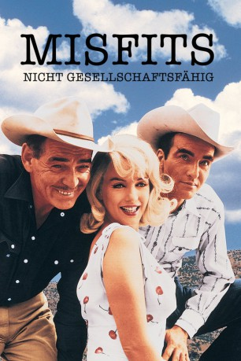

#3679 Misfits - Nicht gesellschaftsfähig
Alternativ: The Misfits
 
 IMDB-Wertung: 7.4 / 10
IMDB-Wertung: 7.4 / 10  Metascore: 0
Metascore: 0 
Roslyn Taber (Marilyn Monroe) lässt sich in Reno, Nevada von ihrem Mann scheiden. Auf der Suche nach dem Unbekannten, das ihrem Leben wieder einen Sinn geben könnte, gerät sie unverhofft zwischen die drei Cowboys Gay (Clark Gable), Perce (Montgomery Clift) und Guido (Eli Wallach). Alle drei sind Aussenseiter mit einer bewegten Vergangenheit. Ihre einzige Gemeinsamkeit ist, dass sie in Roslyn verliebt sind. Zu viert machen sie sich auf eine dramatische Mustangjagd, bei der die endgültige Entscheidung um Roslyn's Gunst fallen wird...
Jahr: 1961
Dauer: 124 Minuten
FSK: 16
Land: USA Studio: A United Artists releaseTonspuren:
Untertitel: Deutsch, Englisch,
Auflösung: 1080p (1800x1080) Größe: 11878 MB
Genre: Drama, Western, Liebe
Regisseur:  John Huston
John Huston
Drehbuch: Luke Short
Soundtrack:
Darsteller:
 Clark Gable als Gay Langland
Clark Gable als Gay Langland Marilyn Monroe als Roslyn Taber
Marilyn Monroe als Roslyn Taber- Montgomery Clift als Perce Howland
 Thelma Ritter als Isabelle Steers
Thelma Ritter als Isabelle Steers Eli Wallach als Guido
Eli Wallach als Guido- James Barton als Fletcher's Grandfather
 Kevin McCarthy als Raymond Taber
Kevin McCarthy als Raymond Taber- Estelle Winwood als Church Lady Collecting Money in Bar
- Rex Bell als Old Cowboy , uncredited
 John Huston als Extra in Blackjack Scene , uncredited
John Huston als Extra in Blackjack Scene , uncredited- Ralph Roberts als Ambulance Driver at Rodeo , uncredited
- Peggy Barton als Young Bride , uncredited
- Ryall Bowker als Man in Bar , uncredited
- Frank Fanelli Sr. als Gambler at Bar , uncredited
- Bobby LaSalle als Bartender , uncredited
- Philip Mitchell als Charles Steers , uncredited
- Walter Ramage als Old Groom , uncredited
- Dennis Shaw als Fletcher - Young Boy in Bar , uncredited
- J. Lewis Smith als Fresh Cowboy in Bar , uncredited
- Marietta Tree als Susan , uncredited
Datei: X:\HD-Western-1900-1979\Misfits - Nicht gesellschaftsfähig (1961, FSK16, 1800x1080) seit 18.05.2016
Festplatte: HD Eastern+Western
 Alle Filme aus Gruppe 'HD-Western-1900-1979'
Alle Filme aus Gruppe 'HD-Western-1900-1979'
- Misfits - Nicht gesellschaftsfähig (der aktuelle Film)